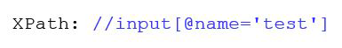
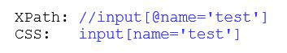

Локаторы
XPath
Xpath — это путь уникально идентифицирующий элемент в xml разметке страницы.
Элементы
//*- выбирает все элементы в документе//div- выбирает все div'ы//div/*- выбирает все дочерние элементы div'ов//div/ul- выбирает прямых потомков ul у всех div'ов//div//ul- выбирает все потомки ul на любой глубине вложенности у всех div'ов//div[@*]- выбирает те div'ы у которых есть любые атрибуты//div[@id='page']- выбирает те div'ы у которых есть id равен 'page'//a[.='вход']- выбор элемента с текстом 'вход'//input[@id='test']/..- выбор элемента на уровень выше//form[./input[@id='test']]- подзапрос в запросе
Предикаты
//div/ul[1]- выбирает первый элемент ul, который является потомком элемента div//div/ul[last()-1]- выбирает предпоследний элемент ul, который является дочерним элементом элемента div//div/ul[position()<3]- выбор первых двух элементов ul, которые являются потомками элемента div//div[contains(@id,'korabl')]- выбирает элементы содержащие в id текст ’korabl’//div/book[price>35.00]- выбирает все элементы book после элемента div, которые имеют элемент price > 35.00
Родственные узлы
ancestor::div- выбирает всех предков div текущего узлаchild::div- выбирает все узлы div, которые являются потомками текущего узлаdescendant::div- выбирает всех потомков текущего узлаfollowing- выбирает всё в документе после закрытия тэга текущего узлаfollowing-sibling- выбирает все узлы одного уровня после текущего узлаpreceding-sibling- выбирает всех братьев и сестёр до текущего узла
СSS
Вложенные элементы
Случай когда мы можем найти только родительский элемент, и от него искать дочерий
XPath: //input[@name='test']/input
CSS: input[name='test']>input
Вложенные элементы на любой глубине
Случай когда дочерний элемент лежит глубже чем просто наследник
XPath: //input[@name='test']//input
CSS: input[name='test'] input
Сокращенная запись CSS
Сокращенная запись по поиску id
XPath: //form[@id='test']
CSS: input#test
Сокращенная запись по поиску class
XPath: //*[@class='test']
CSS: *.test
Минусы CSS относительно XPath
- CSS не может искать по тексту
- CSS не может подниматься на уровень вверх к родительскому элементу
- CSS не может выполнять подзапросы в запросе
Более коротка запись поиска относительно XPath
Пробел находит все потомков у элемента
div#ires a- находит все ссылки у дива с айдишником iresdiv#ires a:nth-of-type(1)- находит все ссылки у дива с айдишником ires первыеdiv >a- все дивы, у которых сразу за ними есть потомок аdiv+div- находит див который идет сразу за первым дивомdiv+a- все дивы за которыми сразу идут a элементы(ссылки)div ~ div- пропускает элемент за элементомa:contains(«ggdgdgd»)- находит а содержащую «ggdgdgd»
Предикаты
body[vlink=1]- ищем тег body, у котрого атрибут vlink=1body[vlink*=1]- ищем тег body, у котрого атрибут vlink содержит в себе 1body[vlink$=1]- ищем тег body, у которого атрибут vlink заканчивается на 1body[vlink^=1]- ищем тег body, у которого атрибут vlink начинается на 1
Поиск в консоле Chrome
СSS: $(“input#foo”)
xPath: $x(“//input”)